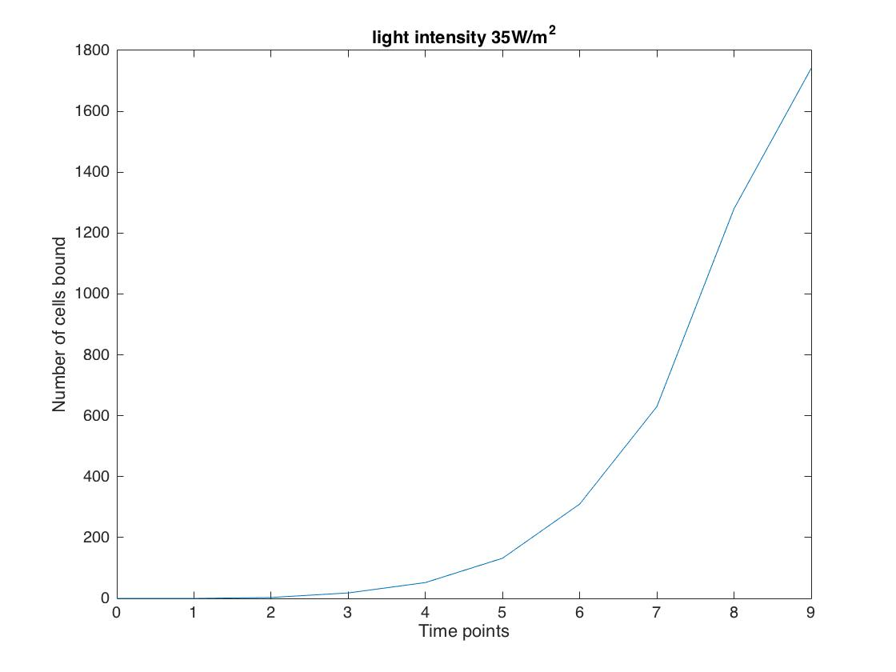
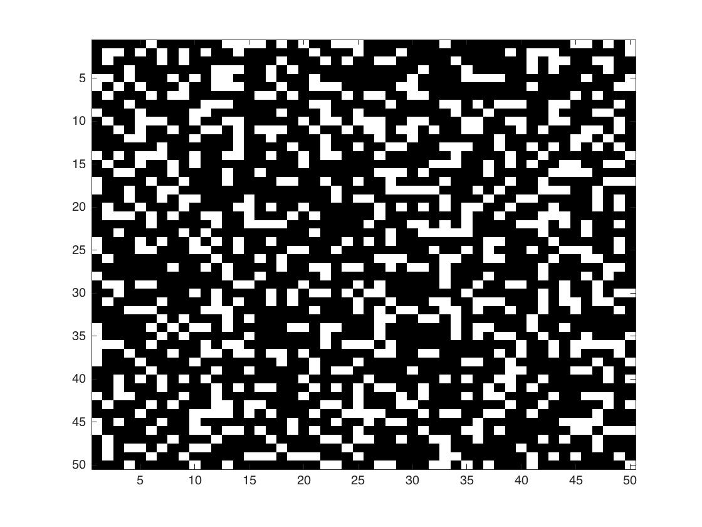

GOLIT - Cell adhesion to form bacterial 3D structures
Merging SynBio with cellular automata
GOLIT is an adapted version of Conway’s ‘Game of Life’ [add link to glossary]. It aims to create a visual representation of how solid cell structures formfrom the binding of SpyTag and SpyCatcher.
- We attempted to optimise the range at which cell adhesion occurs in the GOLIT model. For this we
introduced a range of novel approaches in the GOLIT model:
- Combination of ordinary differential equations for gene expression and cellular automata for spatial analysis
- Genetic Algorithm for automated parameter optimization
- Experimental data for parameter optimization
What are we modelling?
We are modelling a cellular automaton to represent the adhesion of cells in a dynamic and stochastic way. Our Wet Lab team is engineering E. coli cells to express the binding partners SpyTag and SpyCatcher on their surface. SpyTag and SpyCatcher form a covalent bond and allow cells to aggregate and form bacterial structures. With GOLIT we are simulating the adhesion of these binding partners over time by considering the concentration of cells in a cell culture as well as assessing probabilities depending on specific conditions (described below)
How did we adapt the Game of Life?
Similarly to the Game of Life, we are representing the cells on a 2D grid.
In the GOLIT model the cells can either be in the “bound” or “unbound” state. The game requires to define the state of all the cells on the grid
and update the grid according to a set of rules after each time point. The state of a cell at particular
time point depends on the the state of its neighboring cells as well as the concentration of SpyTag/
SpyCatcher expressed on the surface of the cells.
The rules below assign probabilities of one cell turning to the "bound" state depending on the
number of neighbors in the "bound" state it has.
Rules of the Game of LIT
| Number of "bound" neighbors | Probability of binding (%) |
|---|---|
| 0 | 20 |
| 1 | 30 |
| 2 | 60 |
| 3 | 80 |
| 4 | 99 |
Combination of ODE and Cellular Automata
Aim: Determine which light intensity allows the fastest cell aggregation, i.e. binding of SpyTag and SpyCatcher
The particularity of the GOLIT model lies in the combination of rate kinetics and cellular
automata for spatial analysis. The concentration of SpyTag and SpyCatcher expressed on the surface of the engineered E. coli
cells is critical for the efficiency of cell adhesion. LEGIT uses rate kinetics to model the rate of intimin expressed
on the surface of the bacteria for light intensities in the range 0-70 W/m2.
For the purpose of this model we are assuming that the concentration of intimin expressed corresponds
to the amount of SpyTag/ SpyCatcher on the surface of the cells. Since updating the grid in the GOLIT
model depends on the concentration of protein expressed, we extracted the concentrations of intimin
expressed from the LEGIT model and fed it into the GOLIT model.
- Setting up the Initial conditions for the model:
- Dimensions of the grid (height and length)
- The amount of bound cells at time point, t=0
- The amount of unbound cells at time point, t=0
- The number of generations, i.e. the number of times the grid will be updated
- The duration of each generation
Click here to check out our code!
Results
We ran the game with the light intensities tested in the lab and the corresponding concentrations blablabla
For 18 W/m2


Fig. 1 shows the rate cell adhesion, Cell Number vs. times points measured. The grid shows blablabla
For 35 W/m2
 Fig. 1 shows the rate cell adhesion, Cell Number vs. times points measured. The grid shows blablabla
For 53 W/m2


Fig. 1 shows the rate cell adhesion, Cell Number vs. times points measured. The grid shows blablabla
For 70 W/m2


Fig. 1 shows the rate cell adhesion, Cell Number vs. times points measured. The grid shows blablabla
Paragraph about how what this shows and say smth about random ...
We then decided to ......


Adding Artificial Intelligence to the Model
Aim: Optimize the light distribution pattern on the initial grid to allow
the fastest rate of cell aggregation.
We decided to add an innovative twist to our model by incorporating artificial intelligence,
more particularly Genetic Algorithm (GA). Genetic Algorithms, a type of subsymbolic artificial
intelligence, adopt the principles of Darwinian evolution to tackle the challenge of parameter
optimization.
In the context of GOLIT we are applying a genetic algorithm to optimize the initial grid,
i.e. the grid at time, t=0. In other words, this means that we are generating the initial pattern
of “bound” cells on the grid that will allow the fastest rate of cell adhesion. Given as only
condition, a maximum number of cells to be placed on the initial grid, the model runs a number of
“agents” that generate different patterns according to random probabilities. The genetic algorithm
then selects the “best agent”, i.e. the “agent” showing the pattern that will allow cells to aggregate
fastest.
Click here to access Github
Results
add stuff about the initial conditions of the GA
Re-running the game with optimized conditions
Experimental Data
We realize that experimental data is very valuable to optimize a mathematical model. Therefore, we simulated the bacterial SpyTag/ SpyCatcher adhesion chemically, by texting the adhesion between Biothin and Avadin. Similarly, to SpyTag and SpyCatcher, Biothin and Avadin form a covalent bond. This experimental data allowed us to optimize the concentration of surface proteins needed to achieve the highest binding rate.
change the text add content about the lab procedure/protocol? and tehn experimental data and maybe the video?